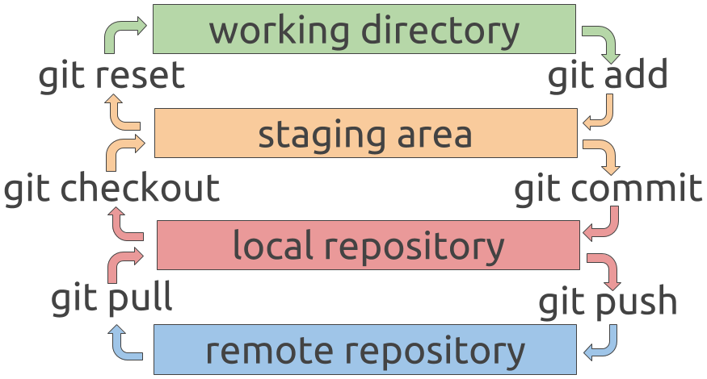

Qué es:
Es una plataforma de desarrollo colaborativo, donde podemos alojar proyectos utilizando
el sistema de control de versiones Git, basicamente es utilizado para la creación
del código fuente de alguna aplicación, página, blog etc...
Estos proyectos se almacenan en unos repositorios, que es un directorio donde se guardan
los archivos del proyecto, este puede estar ubicado en el almacenamiento GitHub
o en tu propio ordenador, puedes almacenar archivos de código, imágenes, audios y muchas
cosas más.
(nextu.com, 2019).
Como usar GitHub
[Piensa 3D] (2019). CÓMO USAR Git y GitHub FÁCILMENTE [ 2019 ] [Archivo de Video]. Obtenido de
https://youtu.be/3XlZWpLwvvo
Como instalar GitHub
[ProCode Tv] (2018). Github for Desktop - Como subir tu proyecto a Github [Archivo de Video]. Obtenido de
https://youtu.be/3XlZWpLwvvo
Comprender el flujo de GitHub
Traducido de (guides.github.com, 2019).Crear una rama (branch)
Cuando se trabaje en un proyecto, se tendrá un montón de características o ideas diferentes en progreso en cualquier momento dado, algunas de las cuales están listas para funcionar y otras no. La ramificación existe para ayudarlo a administrar este flujo de trabajo.
Cuando se crea una rama en su proyecto, se está creando un entorno en el que puede probar nuevas ideas. Los cambios que
realice en una rama no afectan a la rama maestra, por lo que puede experimentar y confirmar los cambios, con la
seguridad de que su rama no se fusionará hasta que esté lista para ser revisada por alguien con quien esté
colaborando.
La ramificación es un concepto central en Git, y todo el flujo de GitHub se basa en él. Solo hay una regla:
cualquier cosa en la rama maestra siempre se puede implementar.
Debido a esto, es extremadamente importante que su nueva rama se cree fuera de la rama maestra cuando se trabaja en una
función o una solución.

https://asanzdiego.github.io/curso-git-github-markdown-2016/slides/export/git-github-markdown-resumen-reveal-slides.html